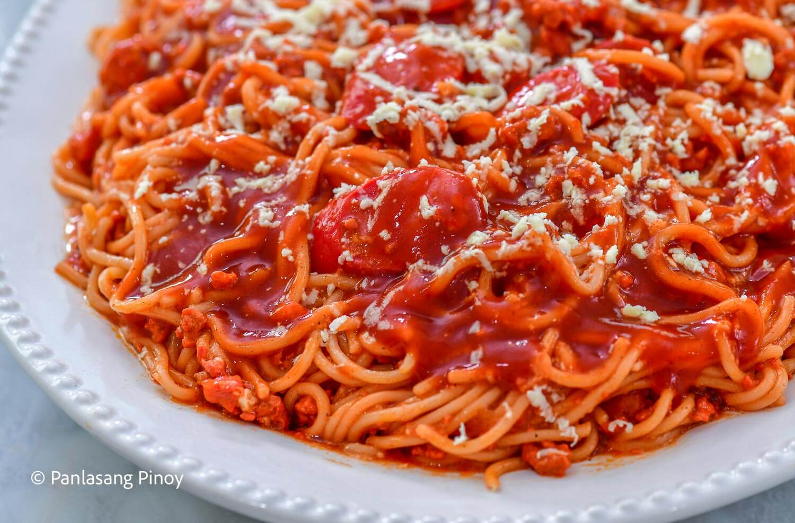

Filipino Spaghetti

Description
Filipino spaghetti is a sweet-style pasta dish made with spaghetti,
tomato sauce, ground meat, hotdogs, and cheese.
Ingredients
- Spaghetti noodles
- Ground pork or beef
- Hotdogs
- Tomato sauce
- Banana ketchup
- Cheese
- Garlic
- Onion
- Salt and pepper
Steps
- Cook the spaghetti noodles according to the package instructions.
- Cook the garlic, onion, and ground meat in a pan.
- Add the sliced hotdogs and cook for a few minutes.
- Add tomato sauce and banana ketchup.
- Simmer the sauce until it becomes thick.
- Mix the sauce with the cooked spaghetti.
- Add grated cheese on top and serve.
Back to Home